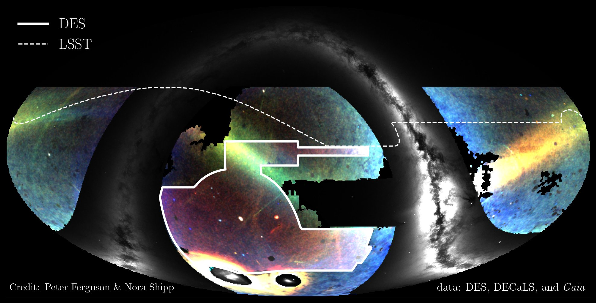

Research

Milky Way Stellar Streams
We discover and characterize the population of stellar streams around the Milky Way using large surveys like the Dark Energy Survey, Gaia, and the Rubin Observatory LSST. These observations reveal the structure, kinematics, and chemistry of streams across the sky, providing powerful probes of the Galaxy's dark matter distribution and assembly history.
Key papers: Shipp et al. 2018 · Ferguson & Shipp 2025
Disrupting Satellites Across Simulations
Using populations of disrupting satellites in cosmological and idealized simulations, we test our understanding of small-scale galaxy formation, examine the Milky Way's place in our Universe, and challenge the standard cosmological model (ΛCDM). By expanding beyond the small subset of satellites that remain intact, stellar streams allow us to probe galaxies at all stages of tidal disruption. We build synthetic surveys of stellar streams in simulations and compare them directly to observations to answer key questions about dark matter physics and the evolution of the Milky Way.
Key papers: Shipp et al. 2023 · Shipp et al. 2025
Galactic Dynamics
We create dynamical models of the Milky Way to understand the distribution of dark matter and characterize disequilibrium in our Galaxy. This includes using stellar streams as tracers of the Galactic potential and measuring the influence of the LMC — an ongoing massive infall that is actively reshaping the Milky Way's dark matter halo.
Key papers: Shipp et al. 2021 · Arora et al. 2025
Dark Subhalos
The frontier of the astrophysical study of dark matter lies at the lowest mass scales — below the threshold of galaxy formation — a regime only accessible in the local universe through stellar streams. Low-mass dark subhalos are a key prediction of ΛCDM, and their detection or non-detection will strongly constrain the particle properties of dark matter. As co-convener of the LSST DESC Dark Matter Working Group and Stellar Streams Topical Team, my group has led community efforts to develop the analysis infrastructure and forecast dark matter constraints with LSST. If you are interested in getting involved, please consider joining DESC and reach out to Nora Shipp.
Key papers: Nguyen et al. 2026

Populations of disrupting satellites — intact, streams, and phase-mixed — around a Milky Way-mass galaxy in the Auriga simulations. From Shipp et al. 2025.
Surveys
LSST Dark Energy Science Collaboration (DESC) · Southern Stellar Stream Spectroscopic Survey (S⁵) · DECam Local Volume Exploration Survey (DELVE)
Simulations
FIRE · Auriga · N-body Shop